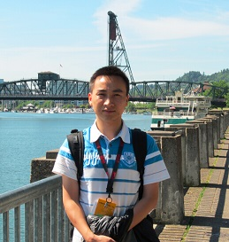

|  | Wen Xia, Ph.D., Associate Professor School of Computer Science and Technology Office: HIT Campus of University Town of Shenzhen, Shenzhen, China |
||||
| Publications | Teaching | Grants | Awards | ||
|
|
|||||
Wen Xia received his Ph.D. degree in Computer Science from Huazhong University of Science and Technology (advised by Professor Dan Feng) in June, 2014. He is currently an associate professor at School of Computer Science and Technology, Harbin Institute of Technology, Shenzhen. His research interests include data deduplication, data compression, storage systems, and cloud storage. He publishes over 30 papers in major journals and conferences including Proceedings of the IEEE (PIEEE), IEEE Transactions on Computers (TC), IEEE Transactions on Parallel and Distributed Systems (TPDS), USENIX ATC, FAST, INFOCOM, MSST, Performance, IPDPS, HotStorage, etc. He is a member of ACM, CCF, IEEE, and USENIX.
Selected Publications (Google Scholar, DBLP):
Education:
2009.09-2014.06. Ph.D. in Computer Science,
Huazhong University of Science and Technology (HUST), Wuhan, China.
Advisor: Prof. Dan Feng.
2008.09-2009.08. M.S. candidate in Computer Science,
Huazhong University of Science and Technology (HUST), Wuhan, China.
Advisor: Prof. Yu Hua.
2004.09-2008.06. B.S. in Computer Science,
Hunan Normal University (HUNNU), Changsha, China,
Advisor: Prof. Guangming Qian.
Visiting and Industry Experiences：
2012.09-2013.03. Research Intern in Storage System Group of NEC Laboratory American (NEC Labs), NJ, USA.
Advisor: Dr. Cristian Ungureanu, Dr. Erik Kruus, and Dr. Biplob Debnath.
2011.12-2012.06. Visiting Student in Computer Science and Engineering, University of Nebraska- Lincoln (UNL), NE, USA.
Advisor: Prof. Hong Jiang (IEEE Fellow).
National Natural Science Foundation of China (NSFC), No. 61502190, 2016- 2018 (PI).
Tencent Cloud Computing Data Center Research Project, 2015- 2016 (PI).
Advisor Award for Excellent B.E Thesis in Hubei Province, 2015. (湖北省优秀学士学位论文指导老师)
Excellent Doctorial Dissertation Award of Hubei Province, 2015. (湖北省优秀博士学位论文奖)
Advisor Award for Excellent B.E Thesis, Huazhong University of Science and Technology, Wuhan, China, 2015. (华中科技大学优秀学士学位论文指导老师)
Student Travel Grant. The 2014 USENIX Annual Technical Conference (USENIX ATC'14). Philadelphia, PA, USA, 2014.
Science Star (TOP 5 Excellent Ph.D. students), Wuhan National Laboratory for Optoelectronics, Wuhan, China, 2013. (武汉光电国家实验室科技之星)
Guanghua scholarship, Huazhong University of Science and Technology, Wuhan, China, 2012. （华中科技大学光华奖学金）
Student Travel Grant. The 10th USENIX Conference on File and Storage Technologies (FAST’12). San Jose, CA, USA, 2012.
Outstanding doctoral research funding grant of Huazhong University of Science and Technology, 2012.
Outstanding graduate student, Huazhong University of Science and Technology, Wuhan, China, 2010 and 2011.
Talks
USENIX ATC 2016, paper presentation: FastCDC: a Fast and Efficient Content-Defined Chunking Approach for Data Deduplication. Denver, CO, USA, June 2016.
USENIX HotStorage 2015, paper presentation: Edelta: A Word-Enlarging Based Fast Delta Compression Approach. Santa Clara, CA, USA, July 2015.
USENIX ATC 2014, poster presentation: Ddelta: A Deduplication-Inspired Fast Delta Compression Approach. Philadelphia, PA, USA, June, 2014.
IEEE DCC 2014, paper presentation: Combining Deduplication and Delta Compression to Achieve Low-Overhead Data Reduction on Backup Datasets. Snowbird, UT, USA, March, 2014.
CCF NCIS 2013, invited talk: An Introduction to Data Deduplication. Wuhan, China, September, 2013.
IEEE NAS 2012, paper presentation: P-Dedupe: Exploiting Parallelism in Data Deduplication System. Xiamen, China, June, 2012.
USENIX FAST 2012, Work-in-Progress report: Accelerating Data Deduplication by Exploiting Pipelining and Parallelism with Multicore or Manycore Processors. San Jose, CA, February, 2012.
USENIX ATC 2011, paper presentation: SiLo: A Similarity-Locality based Near-Exact Deduplication Scheme with Low RAM Overhead and High Throughput. Portland, OR, USA, June, 2011.
Patent and Software Copyright
Dan Feng, Wen Xia, and Yu Hua. A Similarity and Locality based Deduplication Scheme. Granted
Number: ZL201110127695.6. (Chinese)
Dan Feng, Wen Xia, Hong Jiang, Lei Tian, and Min Fu. A Data Deduplication Aware Delta Compression Scheme. Granted Number: ZL201210303650.4. (Chinese)
Dan Feng, Wen Xia, Yucheng Zhang, and Min Fu. A Parallel Chunking Algorithm for Data Deduplication. Application Number: 201410621223.X. (Chinese)
Dan Feng, Yukun Zhou, Wen Xia, Min Fu, and Fangting Huang. A Secure Data Deduplication Scheme for Backup System. Application Number: 201310301670.2. (Chinese)
Dan Feng, Yukun Zhou, Wen Xia, Min Fu, and Fangting Huang, Yucheng Zhang, Chunguang Li, A User-Aware Efficient Secure Deduplication Method and System. Application Number: 201510257654.7. (Chinese)
Cristian Ungureanu, Erik Kruus, Wen Xia. Low-Memory Data Structure For Deduplicated Cache. Application Number: 61/811,271. (USA)
Dan Feng, Yucheng Zhang, Wen Xia, Min Fu, Fangting Huang, and Yukun Zhou. A Chunking Method based on Asymmetric Extremum for Data Deduplication. Application Number: 201410803454.2. (Chinese)
Dan Feng, Min Fu, Yu Hua, Wen Xia, Fangting Huang, and Qing Liu. A Fragmentation Elimination Scheme based on Historical Information. Application Number: 201410249181.1. (Chinese))
Dan Feng, Min Fu, Yu Hua, Wen Xia, Fangting Huang, and Qing Liu. A Cache Scheme for Data Restore in Deduplication systems . Application Number: 201410249865.1. (Chinese)
Yu Hua, Dan Feng, Rongyu Lai, Wen Xia, Fangting Huang, Yukun Zhou, and Yucheng Zhang. A Defragmentation Strategy based on Global Statistics for Cloud Backups. Application Number: 201410089576.X. (Chinese)
Dan Feng, Jingning Liu, Zhongtao Wang, and Wen Xia, A R_DS based Reliable deduplication system. Software copyright (No. 2012SR018473) .
Dan Feng, Yujuan Tan, Wei Xu, Shengli Zheng, Wen Xia, Guohui Zhou, Juan Gao, Zhongtao Wang, and Debing Ding, HUSTBackup Storage System. Software copyright (No. 2010SR052427).
Dan Feng, Yukun Zhou, Wen Xia, and Min Fu, A Secure and Efficient Deduplication-based Backup System, Software Copyrights, (No.2015SR179323)
Professional Services
Resume